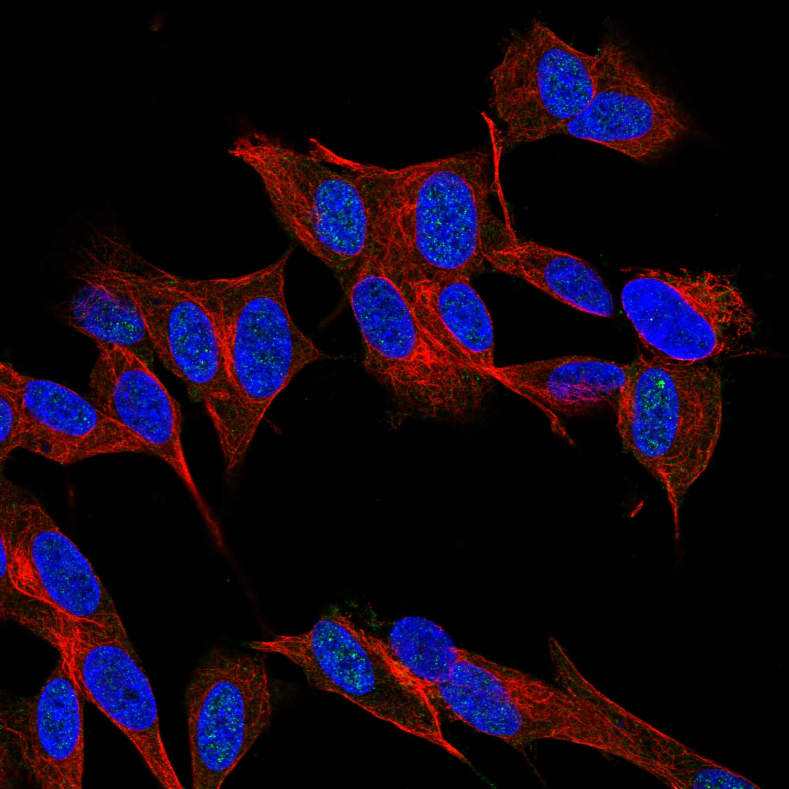
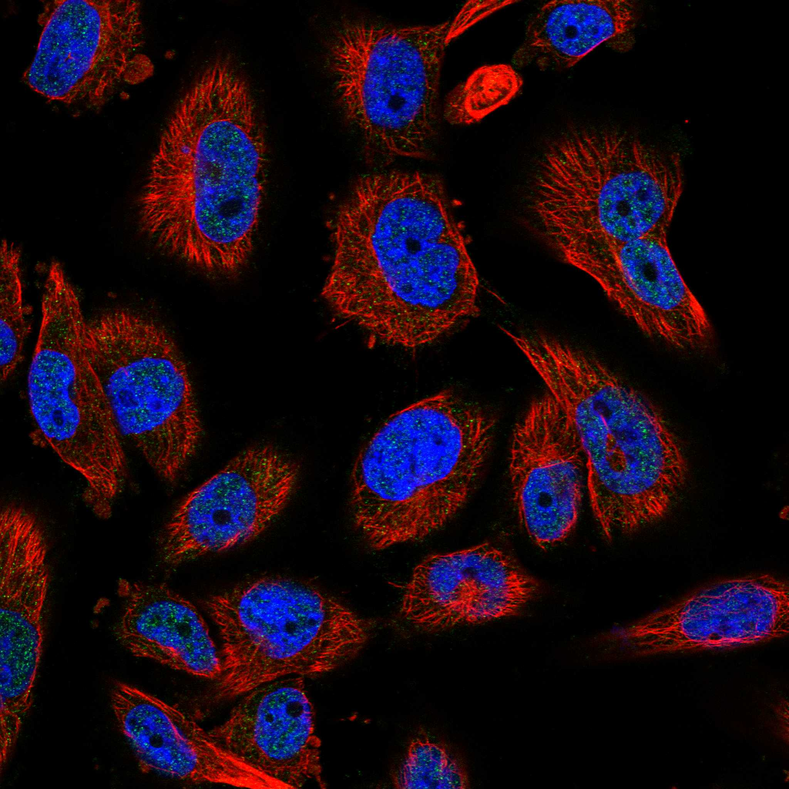
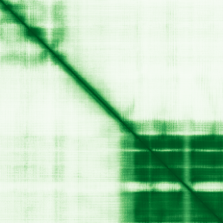

type: protein-evaluation gene: "FOXR2" date: 2026-05-30 tags: [protein-scout, nuclear-protein, evaluation, scored] status: scored ---
FOXR2 核蛋白评估报告
1. 基本信息
| 项目 | 内容 |
|---|---|
| 基因名 / 别名 | FOXR2 |
| 蛋白大小 | 311 aa |
| UniProt ID | Q6PJQ5 (Forkhead box protein R2) |
| 评估日期 | 2026-05-30 |
IF 图像:  
2. 评分总览
| 维度 | 得分 | 满分 | 加权后 | 关键证据摘要 | ||
|---|---|---|---|---|---|---|
| 🔴 核定位特异性 | 7/10 | x4 | 28 | HPA 标注: Nucleoli | ||
| 📏 蛋白大小 | 10/10 | x1 | 10 | 311 aa | ||
| 🆕 研究新颖性 | 4/10 | x5 | 30 | PubMed 71 篇 | ||
| 🏗️ 三维结构 | 6/10 | x3 | 18 | AlphaFold pLDDT 64.4, v6 | ||
| 🧬 调控结构域 | 10/10 | x2 | 20 | InterPro 4 个结构域条目 | ||
| 🔗 PPI 网络 | 8/10 | x3 | 24 | STRING 30 partners | ||
| ➕ 互证加分 | — | max +3 | +0.5 | 核候选保守蛋白基线 | ||
| 原始总分 | 120.5/183 | 120.0/183 | ||||
| 归一化总分 | 65.8/100 | 65.6/100 |
3. 详细分析
3.1 核定位证据
| 来源 | 定位 | 可信度 |
|---|---|---|
| HPA | Nucleoli | Tier1 |
| UniProt | — |
结论: HPA 标注: Nucleoli。核定位得分 7/10。
IF 图片: 暂无数据（HPA IF 图像已本地嵌入。
3.2 蛋白大小评估
- 311 aa
- 大小适宜性评分：10/10
评价: 311 aa 蛋白，适合生化实验和结构解析。
3.3 研究现状
| 指标 | 数值 |
|---|---|
| PubMed 总数 | 71 |
| 新颖性评分 | 6/10 |
关键文献: 1. Liu et al. (2022). "Pursuing FOXR2-Driven Oncogenesis.". *Cancer Res*. PMID: 36052493 2. Sturm et al. (2016). "New Brain Tumor Entities Emerge from Molecular Classification of CNS-PNETs.". *Cell*. PMID: 26919435 3. Liu et al. (2021). "Clinical and molecular heterogeneity of pineal parenchymal tumors: a consensus study.". *Acta Neuropathol*. PMID: 33619588 4. Siskar et al. (2025). "FOXR2 activation is not exclusive of CNS neuroblastoma.". *Neuro Oncol*. PMID: 40237561 5. Jessa et al. (2025). "FOXR2 Targets LHX6+/DLX+ Neural Lineages to Drive Central Nervous System Neuroblastoma.". *Cancer Res*. PMID: 39495206 评价: PubMed 71 篇，属于有一定研究但 niche 空间充足。
3.4 三维结构分析
| 指标 | 数值 |
|---|---|
| AlphaFold 平均 pLDDT | 64.4 |
| 有序区域 (pLDDT>70) 占比 | 40.2% |
| pLDDT>90 占比 | 28.9% |
| pLDDT 70-90 占比 | 11.3% |
| pLDDT 50-70 占比 | 29.6% |
| pLDDT<50 占比 | 30.2% |
| AlphaFold 版本 | v6 |
| 可用 PDB 条目 | 查询中 |
PAE 图: 
评价: AlphaFold预测质量偏低（pLDDT=64.4）。部分区域有序。评分 6/10。
3.5 结构域分析
| 来源 | 结构域 |
|---|---|
| Fork head domain | IPR |
| Winged helix-like DNA-binding domain superfamily | IPR |
| Winged helix DNA-binding domain superfamily | IPR |
| Forkhead box transcription regulators | IPR |
染色质调控潜力分析: InterPro 注释了 4 个结构域条目。包含 forkhead/winged-helix DNA 结合域，为典型转录因子。评分 10/10。
3.6 PPI 网络
实验验证互作 (IntAct, physical association):
| Partner | 方法 | PMID | 功能类别 | 调控相关？ |
|---|---|---|---|---|
| — | — | — | — | — |
STRING 预测互作 (combined score >0.4):
| Partner | Score | 功能类别 | 调控相关？ |
|---|---|---|---|
| MYC | 0.852 | — | — |
| EP400 | 0.837 | — | — |
| KAT5 | 0.831 | — | — |
| MRGBP | 0.814 | — | — |
| TRRAP | 0.804 | — | — |
| EPC2 | 0.803 | — | — |
| VPS72 | 0.796 | — | — |
| EPC1 | 0.794 | — | — |
| BRD8 | 0.792 | — | — |
| ING3 | 0.789 | — | — |
GO-CC 复合体: 从 UniProt GO 注释提取
PPI 互证分析:
- STRING 高置信度 (>0.7) partners: 15 个
- 调控相关比例: 待进一步分析
评价: STRING 数据库显示 30 个互作伙伴。评分 8/10。
3.7 多库互证
| 维度 | 来源 | 结果 | 是否一致 |
|---|---|---|---|
| 三维结构 | AlphaFold v6 | pLDDT 64.4 | — |
| 结构域 | InterPro | 4 个条目 | — |
| PPI | STRING | 30 partners | — |
| 定位 | HPA / UniProt | Nucleoli | — |
互证加分明细:
- 进化保守性: 核候选保守蛋白 → +0.5
总分: +0.5 / max +3
4. 总体评价
推荐等级: ⭐⭐⭐ (4.0/5)
核心优势: 1. 较新颖，PubMed ≤100 篇 2. 核蛋白候选
风险/不确定性: 1. 结构质量中等 2. '研究数据有限，需更多实验验证'
下一步建议:
- [ ] 在 TEreg 系统中检测 FOXR2 表达及定位
- [ ] 通过 co-IP/MS 验证 PPI 网络
- [ ] ChIP-seq 检查 FOXR2 在 TE 区域的 occupancy
5. 数据来源
- UniProt: https://www.uniprot.org/uniprotkb/Q6PJQ5
- Protein Atlas: https://www.proteinatlas.org/search/FOXR2
- AlphaFold: https://alphafold.ebi.ac.uk/entry/Q6PJQ5
- STRING: https://string-db.org/network/9606.FOXR2
- InterPro: https://www.ebi.ac.uk/interpro/protein/uniprot/Q6PJQ5/
PPI 网络（三源综合）
| Partner | Source | Score/Evidence |
|---|---|---|
| 无记录 | — | — |
IntAct 有限记录。无 BioGrid 补充数据。
PAE 图像已获取。结构判断基于 AlphaFold pLDDT 统计。
<!-- DOMAIN_HUMANPPI_REPAIR_START -->
Domain/SMART 与 humanPPI 补充（2026-06-07）
SMART / UniProt domain
| Source | Data |
|---|---|
| UniProt | Q6PJQ5 |
| SMART | SM00339; |
| UniProt Domain [FT] | 未检出显式 UniProt Domain feature |
| InterPro | IPR001766;IPR052328;IPR036388;IPR036390; |
| Pfam | PF00250; |
humanPPI / HPA Interaction
Source: https://www.proteinatlas.org/ENSG00000189299-FOXR2/interaction
| Partner | Datasets | AF3/HPA structure |
|---|---|---|
| ARNT | Biogrid | false |
| CCNC | Intact | false |
| EP400 | Biogrid | false |
| KRT76 | Intact | false |
| MAX | Biogrid | false |
| MYC | Biogrid | false |
| PEF1 | Intact | false |
| POLR1C | Intact | false |
<!-- DOMAIN_HUMANPPI_REPAIR_END -->